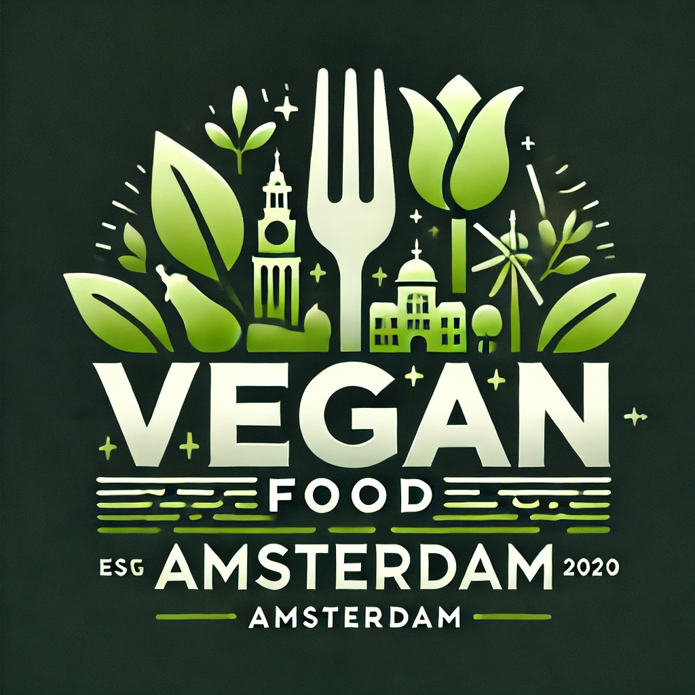

Welkom
Over ons
Ons restaurant richt zich op duurzaam en lekker eten. Alles is 100% vegan en vers bereid.
Contact
Email: info@veganfoodamsterdam.nl
Telefoon: 020 123 4567
📍 Amsterdam

Ons restaurant richt zich op duurzaam en lekker eten. Alles is 100% vegan en vers bereid.
Email: info@veganfoodamsterdam.nl
Telefoon: 020 123 4567
📍 Amsterdam